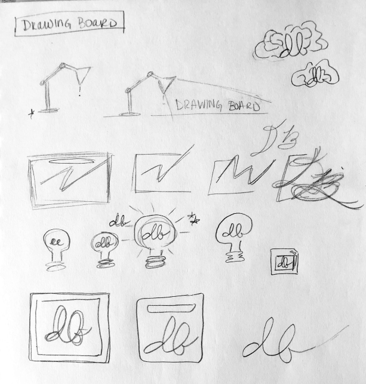
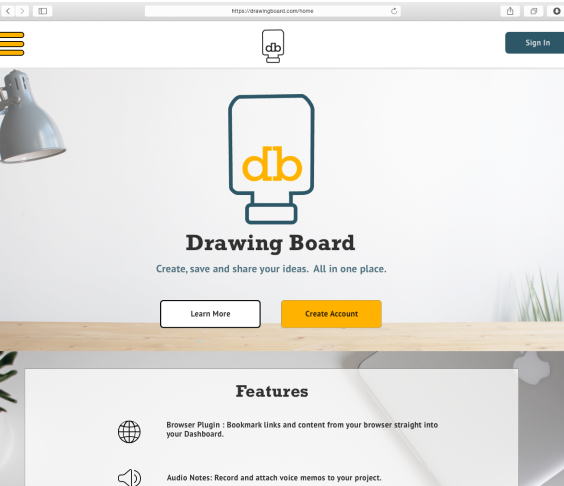

IDEAHUB
The perfect tool for when your ideas strike like lightening!
The perfect tool for when your ideas strike like lightening!
UX Design
Visual Design
Branding & Identity
User Surveys
User Personas
Competitive Analysis
User Flows
Wireframes
Branding Kit
Prototypes
Adobe Photoshop
MyBalsamiq
Figma
Sketch
InVision
IDEAHUB is a cloud storage organization tool created to provide users with an efficent and funtional space to store their ideas, organize and share projects, and save important content.

Saving and managing ideas is vital to every project. There are various cloud storage tools currently available, but most of these products are used for file creation and sharing, not saving ideas

IDEAHUB’s mission is to provide a single platform for users to create and share files as well as save content directly from your phone or browser.
I conducted user surveys to determine what users wanted in a new product. I gathered responses from 21 respondents.
Key Takeaways
Through the user survey results and interviews, I learned more about the motivations and frustrations that current users have. These responses were used to create two User Personas: profiles of who my potential users would be.


To see how IDEAHUB could compete in the current market, I compared three popular tools: Evernote, Pinterest and Google Drive. These three tools had a variety of strengths and weaknesses that were used to inform what features would be highlighted in IDEAHUB. Evernote’s standout features were multiple membership options, including a plan specifically for businesses, and remote access so users can access their content from desktop or mobile devices. Pinterest’s standout feature was their ‘Lens Tool,’ enabling users to save content from their camera. Google Drive’s standout features were their versatility; a variety of membership plans as well as users’ ability to work with a large array of formats. After completing research, I realized there was a significant gap in the current market that IDEAHUB can utilize. IDEAHUB’s standout feature will be the Browser Plugin; a feature where users can save content directly into platform instead of maintaining a long and unorganized bookmark list.
User Stories
Continuing to build on the insights received from the survey results and user stories, I created 3 User Flows based on the tasks Users would need to complete to use our product.
Log In or Sign Up

Create a Project
Add a Collaborator

The IDEAHUB brand is simple, bright and inspiring. The name and logo both speak to the inspiration behind the project: ideas. I wanted the logo to be a visual representation of the brand, and the lightbulb was a natural association with the name of the product. It took many iterations to get to the final version of the logo and brand. Originally, the product was named Drawing Board, but after struggling with the visual design, I decided to rework the branding completely. After two more iterations, I got to the final product.
Iterations
Final Version
Color & Typography

Oswald was used for the Branding typeface and Average was used for the complementary typeface. These fonts were chosen for their simple and easily readable appearance.
I began creating the wireframes by roughly sketching the layout on paper. I then used MyBalsamiq to create a low-fidelity mockup and after some user testing, incorporated those results to create the high-fidelity mockups in Sketch.

For user testing my low-fidelity prototoypes, I conducted 3 tests. Overall, I would say the testing was successful. The test participants successfully completed each task without extra guidance. I did get feedback about changes that were needed as well as ways to make the pages more intuitive/easier to use. It was suggested that I add a navigation bar to the landing page, use better hierarchy for the membership packages as well as sign up buttons, have grid and list format options for the dashboard, condense the add content buttons and add the move feature as a button on each dashboard item.
1.
2.
3.

Final Version

Creating the high-fidelity mockups were the most time-consuming portion of this project for me. For the second round of user testing, I tested the high fiderlity mockups of the original Drawing Board concept. The testers successfully completed the tasks again. However, I needed to make changes to the empty dashboard screen and which icon was used to edit content. I did three more iterations before reaching the final version of the mockups. In the final version of IDEAHUB, I incorporated the changes: simplifying the empty dashboard, using an ellipses for the edit options on content, and modernizing the appearance of the Dashboard.

The first iteration of the design utilized a dark blue and golden yellow as the main colors of the brand. In hindsight, these colors did not speak to the “bright” personality of the brand.
In the second iteration, I arrived at Idea Hub, feeling the name matched better with the logo. I still utilized yellow and blue, but much lighter hues, however, this color scheme seemed too young for the brand.
In my final iteration, I kept the yellow but used white black and gray as complementary colors. The yellow maintained the bright mood of the brand, while the other shades gave the brand a mature look while maintaining simplicity.
This project was a great experience for me. With it being my first major design project, I learned a lot. Maintaining organization was key for the progress of this (and any) project: I learned to use checklists to stay on top of the different tasks in each section of the process, to be extremely meticulous while building mockups to ensure consistent positioning of elements, and to test the visual design before completing all of the screens. It took me several weeks to complete the project because of the many iterations I had to go through to get to the finalized visual design. My favorite parts of the project were user testing and branding the project. I enjoyed using the responses to guide how I built the product and developing the personality of the brand and working out how to best represent that.